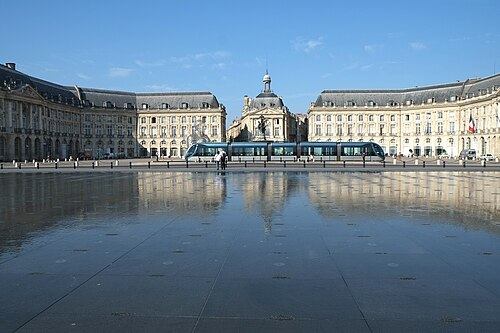
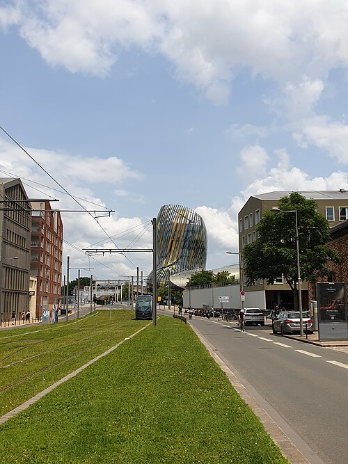
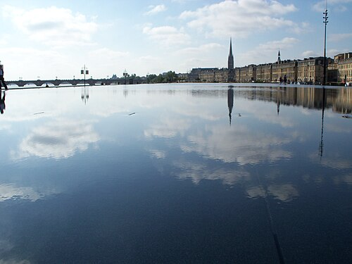

This map shows 19 of the most-searched sights in Bordeaux as photo spots, ranked by how often people search for them: Place de la Bourse, La Cité du Vin, Miroir d'eau, Grosse Cloche and Rue Sainte-Catherine lead the list. Every spot has a pin on the subject and a phone icon showing where to stand, with tips for shooting it on your phone: which lens to use, how to frame it, a settings tip and the best time of day. Directions and Navigate buttons take you to the standing point on foot or by public transport. 3 spots are free to view; the full map is for members.
The 3 free photo spots
1Place de la Bourse

Place de la Bourse is one of Bordeaux's most recognisable sights, a square of pale 18th-century façades facing the river Garonne. It was built between 1730 and 1775 and designed by Jacques Gabriel and his son Ange-Jacques Gabriel, who finished the work. The Palais de la Bourse stands on the north side, now the Chamber of Commerce and Industry, and the former Hôtel des Fermes on the south side houses the National Museum of Customs. The whole area is part of Bordeaux's UNESCO World Heritage listing, added in 2007.
For a phone photo, the best-known view is from the Miroir d'eau, the shallow pool in front of the Bourse. When the water is calm, the façades are mirrored in a thin sheet of water, which gives a very symmetrical picture. During the mist phase the same buildings appear through rising vapour, which looks especially atmospheric after dark. Early morning is the calmest and least crowded time for the mirror shot.
There are two other views worth trying. One is a low angle from the Quai de la Douane, with the river in the frame. The other is from inside the square itself, with the central fountain in the foreground and the Three Graces sculpture, which dates from 1869.
Where it is: In the historic centre of Bordeaux, beside the river Garonne. The Miroir d'eau pool lies in front of the Bourse, beside the quay.
Shooting it on your phone
Lens: Start with the default lens (1x) for the mirrored view, because it keeps the façades looking natural. Switch to the ultra-wide (0.5x) if you cannot fit the whole front and its reflection in. Use the telephoto (2x or more, depending on your phone) for the sculptures and rooflines.
Where to stand: Stand right at the subject (on the pool, facing the Bourse façades across the water). The 18th-century Bourse façades mirrored in a thin sheet of water when the pool is calm, or the same façades through the rising mist during the cycle. From here the 18th-century buildings are mirrored in a thin sheet of water when the pool is calm, or seen through rising mist during the cycle.
Framing: Turn on gridlines and place the horizon of the water on the lower third line, keeping the central façade in the middle so the reflection looks balanced. Crouch down and hold the phone just above the water for a stronger mirror effect. If you have time, a second angle from the Quai de la Douane gives a low view with the river in the frame.
Settings tip: Tap the façade to focus, then slide the exposure down a little so floodlit stonework does not turn white. After dark, use night mode and brace your elbows against your body, as the mist moves and a sharp shot needs a steady hand. A Live Photo can capture the mist as it rises.
Best time: Dusk or blue hour for the floodlit reflection, or early morning for a calm, quiet mirror. One guide says the water cycle runs roughly every 15 to 20 minutes, so wait for the calm phase if you want the mirror.
2Cité du Vin

The Cité du Vin is Bordeaux's wine museum, and the building is the main reason to photograph it. Its curved, swirling form is often compared to a wine carafe, and it stands right beside the Garonne, so the river gives you a clean backdrop. It was designed by XTU Agency, led by Anouk Legendre and Nicholas Desmazières. It opened to the public on 1 June 2016 and had passed 2 million visitors by May 2022.
The best view of the building itself is from Esplanade de Pontac, the public square in front of the main entrance. From there you see the whole curved silhouette with the river behind it. At low tide, sandbanks show in the water and add something to the foreground, so it is worth glancing at tide times if that appeals.
If you have a little more time, two other views are worth a try. Pont Jacques-Chaban-Delmas gives you the museum across the water, framed against the river. Quai de Bacalan suits close-up shots of the facade and its reflections, or a wider view from the river bank.
The belvedere at the top is a paid visit and gives city views rather than a photo of the building, so it is not part of this shot. Because the building is large and curved, give yourself space and avoid tilting the phone, or the walls will lean.
Where it is: The Cité du Vin stands on the bank of the Garonne in Bordeaux, close to the Pont Jacques-Chaban-Delmas.
Shooting it on your phone
Lens: Start with the default lens (1x) to fit the full curved building and the river in one frame. Switch to ultra-wide (0.5x) only if you want a dramatic, close-up view, and watch the edges for stretching. Use telephoto (2x-5x, depending on your phone) for details of the facade.
Where to stand: Stand in Esplanade de Pontac (public square in front of the main entrance, facing the building). The building's full curved, wine-carafe silhouette with the Garonne behind it, and sandbanks in the frame at low tide. From here the photo shows the full curved, wine-carafe silhouette with the Garonne behind it, and sandbanks in the frame at low tide.
Framing: Switch on gridlines and place the building on one side of the frame, with the river and sky filling the rest. Keep the phone level so the vertical lines do not lean. If you have time, Pont Jacques-Chaban-Delmas gives a view of the museum across the river, and Quai de Bacalan suits close-ups of the facade and its reflections.
Settings tip: Tap the building to focus, then lower the exposure slider slightly so the sky keeps its colour. For reflections on the facade, try the telephoto lens and hold the phone steady with both hands. Use night mode at dusk if the light drops.
Best time: Low tide shows sandbanks in the river, which adds to the view from the esplanade, so check tide times. Early or late in the day usually gives softer light on the building.
3Miroir d'eau

The Miroir d'eau is a huge, shallow reflecting pool on the Garonne quay, right in front of Place de la Bourse. It covers 3,450 square metres and was built in 2006 to a design by landscape artist Michel Corajoud. The surface is granite slabs under about 2 cm of water. When the water is calm, the 18th-century Bourse façades appear in it almost perfectly, and every 15 minutes a mist rises and softens the whole scene. It is described as the most-photographed place in Bordeaux's Port of the Moon.
The pool photographs well because the square is so symmetrical. The reflection doubles the buildings, and people wading through the water add scale and life. The two phases of the cycle give you two different pictures: sharp reflection, then drifting mist. The reflection is not always there, though. It depends partly on how many people are walking through the water, so be patient and wait for a clear moment. The pool is also only running for part of the year, so check before you travel.
For a phone, the easiest approach is to keep the whole façade in frame, hold the phone low over the water, and take several shots as the cycle changes. Look at the screen before you press the shutter and check that the buildings are not tilted.
Where it is: On the Garonne quay in front of Place de la Bourse, in the old port area of Bordeaux. The river runs along one side of the pool and the Bourse buildings stand on the other.
Shooting it on your phone
Lens: Start with the ultra-wide (0.5x) to fit the full Bourse façades and their reflection in one frame. Switch to the default lens (1x) for a calmer, less stretched view, and use telephoto (2x or more) for details such as people walking through the mist.
Where to stand: Stand in Place de la Bourse (river (Garonne quay) side of the pool, facing the Bourse façades). The 18th-century Bourse façades reflected in the thin water sheet, with the mist cycle and the square's symmetry framed together. For the full reflection of the Bourse façades, walk to the river (Garonne quay) side of the pool and turn round to face the buildings. From there you can frame the façades, the thin sheet of water and the symmetry of the square together.
Framing: Turn on gridlines and line up the centre of the façade with the middle of the screen so the reflection is balanced. Crouch down and hold the phone just above the water to make the reflection bigger. If you want a different view, the Pont de Pierre gives a more distant picture of the quays and the pool with the river in the foreground, especially once the lights are on.
Settings tip: Tap on the buildings to set focus, then drag the exposure slider down a little so the sky does not turn white. Try Live Photos or take a quick burst to catch the mist rising. After dark, use night mode and brace your elbows against your body to keep the phone steady.
Best time: Early morning, when the water is calm and there are fewer people. Sunset or after dark also works well for lit façades and golden reflections.
16 more spots for members
These spots are on the map as grey numbered pins. Where to stand, the phone tips, photos and directions for them come with Explorer membership.
- 4Grosse Cloche · members
- 5Rue Sainte-Catherine · members
- 6Porte Cailhau · members
- 7Monument aux Girondins · members
- 8Musée d'Aquitaine · members
- 9Bordeaux Cathedral · members
- 10Place des Quinconces · members
- 11Pont de pierre · members
- 12Basilica of St. Michael · members
- 13Tour Pey-Berland · members
- 14Jardin Public · members
- 15Palais Rohan · members
- 16Grand Théâtre de Bordeaux · members
- 17Basilica of Saint Severinus · members
- 18Church of the Holy Cross · members
- 19Pont Jacques Chaban-Delmas · members
Get every spot with Explorer membership
Explorer opens every spot on every map in the library: where to stand, how to frame it on your phone and how to get there, plus the Xdatrys Maps app with maps saved on your phone for use without signal. $9.99 a month or $59.99 a year; cancel any time.
Join Explorer Compare free and Explorer
Not ready to join?
Get Pocket Lens, our free daily smartphone travel photography newsletter.
Free, and you can unsubscribe at any time. If the form does not show, sign up on our newsletter page.
Questions
What are the top photo spots in Bordeaux?
The first three on this map are Place de la Bourse, La Cité du Vin and Miroir d'eau. They are ranked by how often people search for them. The full map has 19.
Where should I stand to photograph Place de la Bourse?
Stand right at Place de la Bourse (on the pool, facing the Bourse façades across the water). Start with the default lens (1x) for the mirrored view, because it keeps the façades looking natural.
When is the best time to photograph La Cité du Vin?
Low tide shows sandbanks in the river, which adds to the view from the esplanade, so check tide times. Early or late in the day usually gives softer light on the building.
How do I get to the Miroir d'eau?
Head for Place de la Bourse in the historic centre of Bordeaux.
Credits
Map data © OpenStreetMap contributors (ODbL); base map built with Protomaps from OpenStreetMap data. Photos from Wikimedia Commons, credited under each photo with their licence. Background reading for the free spots: Place de la Bourse, Bordeaux, Cité du Vin, Miroir d'eau (Wikipedia, CC BY-SA). Access rules and opening times change: check before you go.